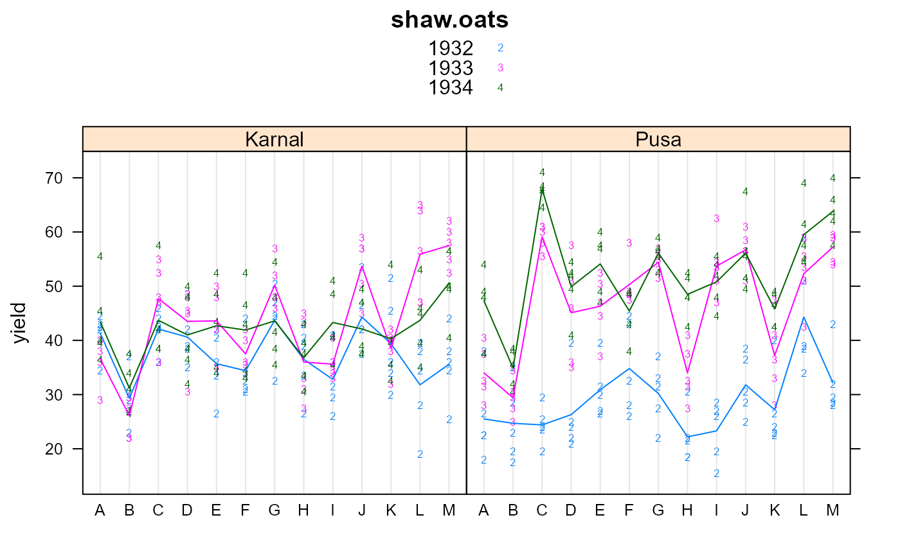

shaw.oats.RdMulti-environment trial of oats in India, 13 genotypes, 3 year, 2 loc, 5 reps
data("shaw.oats")
A data frame with 390 observations on the following 5 variables.
envenvironment, 2 levels
yearyear, 3 levels
blockblock, 5 levels
gengenotype variety, 13 levels
yieldyield of oats, pounds per plot
An oat trial in India of 11 hybrid oats compared to 2 established high-yielding varieties, labeled L and M. The trail was conducted at 2 locations. The size and exact locations of the plots varied from year to year.
At Pusa, the crop was grown without irrigation. At Karnal the crop was given 2-3 irrigations. Five blocks were used, each plot 1000 square feet. In 1932, variety L was high-yielding at Pusa, but low-yielding at Karnal.
Shaw used this data to illustrate ANOVA for a multi-environment trial.
F.J.F. Shaw (1936). A Handbook of Statistics For Use In Plant Breeding and Agricultural Problems. The Imperial Council of Agricultural Research, India. https://archive.org/details/HandbookStatistics1936/page/n12 P. 126
None
library(agridat) data(shaw.oats) dat <- shaw.oats # sum(dat$yield) # 16309 matches Shaw p. 125 # sum( (dat$yield-mean(dat$yield)) ^2) # total SS matches Shaw p. 141 dat$year <- factor(dat$year) libs(lattice) dotplot(yield ~ gen|env, data=dat, groups=year, main="shaw.oats", par.settings=list(superpose.symbol=list(pch=c('2','3','4'))), panel=function(x,y,...){ panel.dotplot(x,y,...) panel.superpose(x,y,..., panel.groups=function(x,y,col.line,...) { dd<-aggregate(y~x,data.frame(x,y),mean) panel.xyplot(x=dd$x, y=dd$y, col=col.line, type="l") })}, auto.key=TRUE)# Shaw & Bose meticulously calculate the ANOVA table, p. 141 m1 <- aov(yield ~ year*env*block*gen - year:env:block:gen, dat) anova(m1)#> Analysis of Variance Table #> #> Response: yield #> Df Sum Sq Mean Sq F value Pr(>F) #> year 2 14475.3 7237.6 352.8158 < 2.2e-16 *** #> env 1 345.4 345.4 16.8352 8.552e-05 *** #> block 4 197.8 49.4 2.4102 0.05444 . #> gen 12 12297.2 1024.8 49.9546 < 2.2e-16 *** #> year:env 2 5945.6 2972.8 144.9164 < 2.2e-16 *** #> year:block 8 3175.2 396.9 19.3480 < 2.2e-16 *** #> env:block 4 735.2 183.8 8.9601 3.422e-06 *** #> year:gen 24 3839.0 160.0 7.7976 9.418e-14 *** #> env:gen 12 1314.2 109.5 5.3386 7.617e-07 *** #> block:gen 48 1112.5 23.2 1.1298 0.30246 #> year:env:block 8 1012.6 126.6 6.1702 2.067e-06 *** #> year:env:gen 24 3123.5 130.1 6.3442 2.344e-11 *** #> year:block:gen 96 2241.1 23.3 1.1380 0.26386 #> env:block:gen 48 897.2 18.7 0.9112 0.63336 #> Residuals 96 1969.3 20.5 #> --- #> Signif. codes: 0 '***' 0.001 '**' 0.01 '*' 0.05 '.' 0.1 ' ' 1